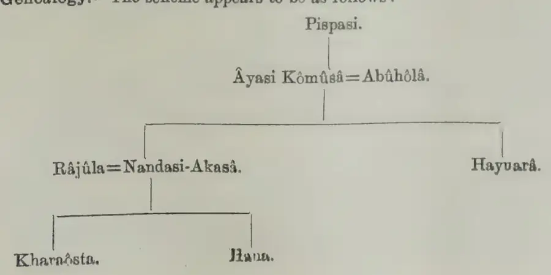
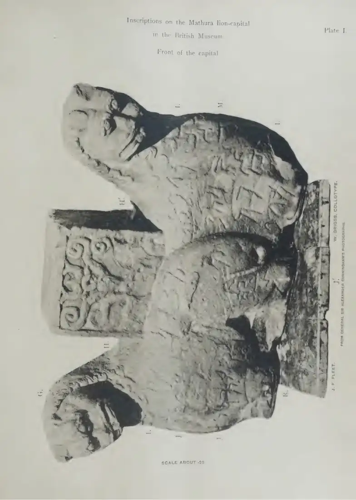
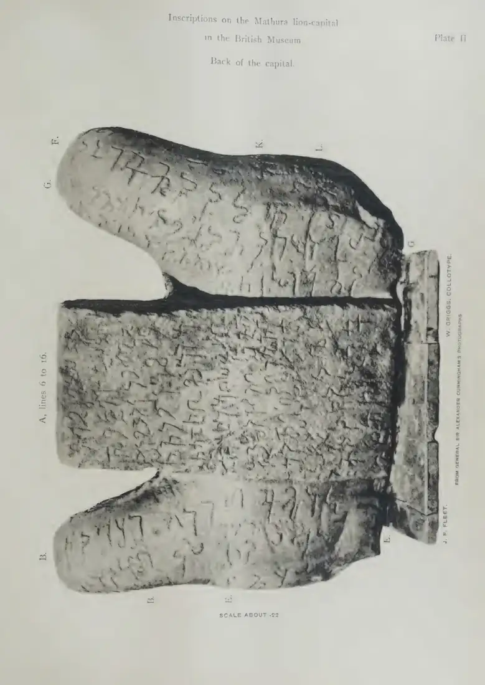
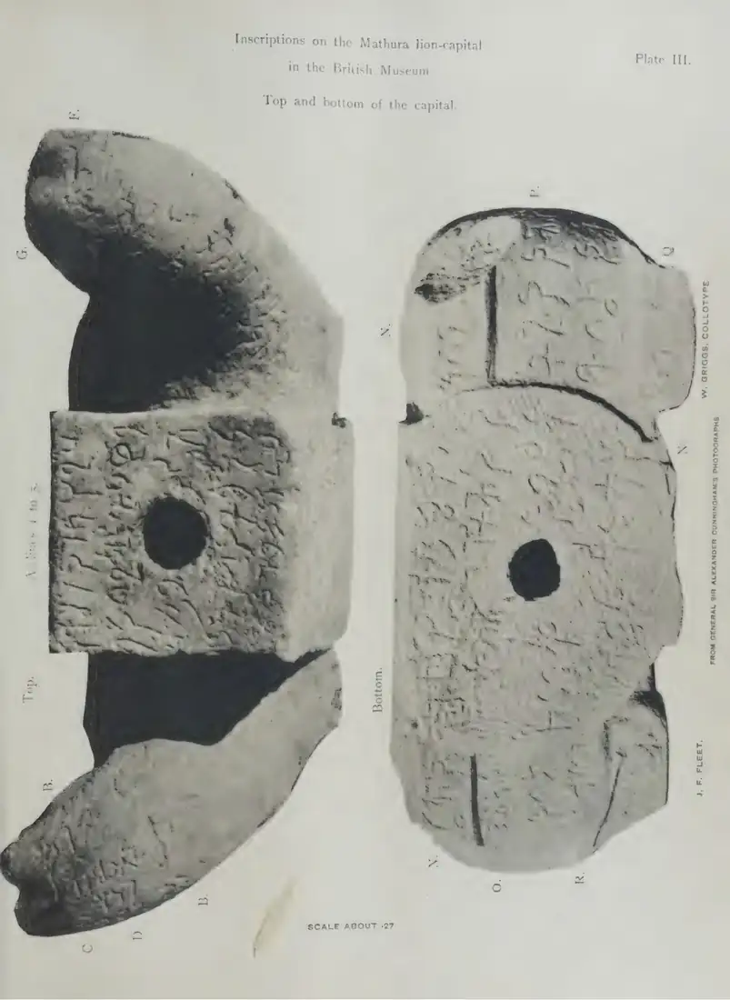
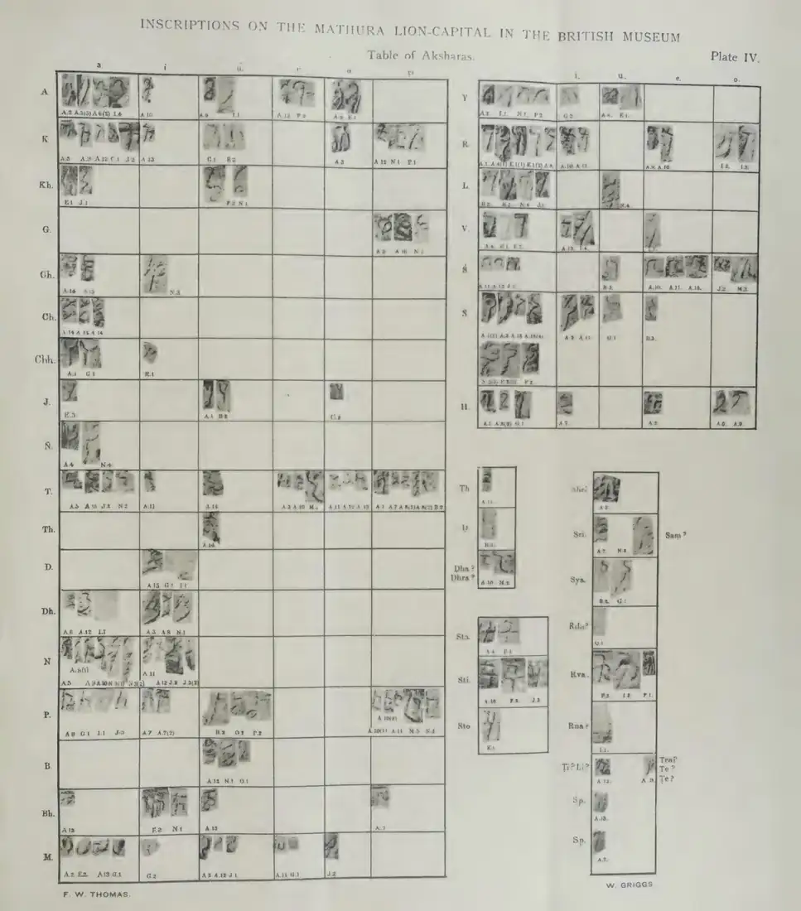

Inscriptions on the Mathurâ Lion-Capital
THE INSCRIPTIONS ON THE MATHURA LION-CAPITAL.
BY F. W. THOMAS, M.A.; LONDON.
The Mathurâ lion-capital was discovered by the late Dr. Bhagvanlal Indraji under circumstances detailed in his article on The Northern Kshatrapas edited and published by Professor E. J. Rapson in the Journal of the Royal Asiatic Society, N. S., Vol. XXVI. 1894, pp. 541-554; see in particular pp. 542-4. It was found embedded in the steps of an altar devoted to Śitalâ on a site belonging to some low-caste Hindús at Mathurâ, but not more definitely located. Having been with difficulty secured by Dr. Bhagvanlal, the capital was conveyed to Bombay; subsequently, on his death, it was despatched to England, and it can now be seen in the Buddhist Room at the British Museum.
The inscriptions incised on the capital were transcribed and translated by the discoverer himself; but owing to his death the task of publishing the MS. was entrusted by the Council of the Royal Asiatic Society to the late Professor Bühler, who was able to compare the readings with the stone itself and with paper impressions presented to him in 1889 by Dr. James Burgess. At the commencement of the published account, which appeared in the Journal of the Royal Asiatic Society, N. S., Vol. XXVI. 1894, pp. 525-540, Prof. Bühler observes that “ the collation has made necessary some alterations in the transcript and in the translation, among which the more important ones have been pointed out in the notes. But I may confidently assert that all really essential points have been fully settled and explained by Dr. Bhagvanlal, whose great acumen and scholarship are as conspicuous in his interpretation of these inscriptions as in his other epigraphic publications. For convenience's sake I have prefixed an introduction, summarising the chief results deducible from the inscriptions.”
1 Read यस्मिन्कासति.
2 The anusvâra stands at the beginning of the next line.
3 Read °रभीन्निरौति°.
4 Read °माणी.
5 The Elavagru grant (l. 32 f.) supplies the correct reading मानीन्नतो नतीरुतसमस्तलोकः.
While endorsing in the main these statements of so great an authority, from all points of view, as the late Prof. Bühler, I have endeavoured, in re-editing the inscriptions with Plates, which before were wanting, to give an unbiased reading based upon new impressions supplied by the kindness of the Department in the Museum (at the instance of Dr. J. F. Fleet, who originated the suggestion of this article), and upon frequent inspections of the stone itself. The present versions will therefore be found to differ in some particulars from those of Dr. Bhagvanlal and Prof. Bühler.
The shape and dimensions of the capital will be best realized from the accompanying Plates ; but some particulars demand a verbal description. In the first place, the circular hole in the upper square surface, corresponding to a similar hole in the under surface, proves that the capital was surmounted by a shaft or some other continuation. Prof. Bühler remarks that various representations on slabs from the Amarâvatî Stûpa prove this shaft to have supported a Dharma-chakra, referring to the Archæological Survey Plates published by Dr. Burgess (Plate xxxviii. figs. 1 and 6, and Plate xl. figs. 3 and 4). But it has already been pointed out by me in the Journal of the Royal Asiatic Society for 1906, pp. 216 and 464, that the use of lion-capitals of actual pillars was a common feature in Indian architecture, derived from Persian models. Examples may be seen in the Archæological Survey publications relating to Bharhut (Cunningham, Plates vi., viii., x.), Sâñchî (Maisey, Plates xix., xxxiii.), Mathurâ (V. A. Smith, Plates xliii.-xlvi. and xlix.-l.), Amarâvatî (Burgess, p. 93, Plates xlix., liii., liv., lv., and Burgess, 1882, Plate xiv.), and elsewhere. The presumption, therefore, is that the lion-capital formed the crown of a real pillar.
Secondly, the state of the stone has been somewhat impaired by time and accident. In some cases, e.g. in the loss of the horn-like projections of the two heads, this has involved no curtailment of the text. The chippings at the two bottom corners have been, no doubt, equally harmless. But the front, which would be the most exposed portion of the stone, has in part so peeled away as to render some characters illegible. In the second line of the large inscription carved on the body of the lion to the spectator's left (J. l. 1) the large rva is followed by traces of two or three aksharas of equal size leading to a partly visible sa (?), after which intervene three doubtful characters before we come to firm ground again in puli.1
In size the aksharas vary considerably. We may distinguish five groups: (1) the inscriptions B. E. F. I. J. M. on the front and back of the stone (among which I. perhaps exceeds the others slightly in size), having characters about 2-2 in. in height; (2) G. N. P. E'', on the back and under surface of the stone, circa 2-1 in.; (3) A. (on the unpolished top and back of the stone), K. L. (on the breast of the left lion), O. Q. R. (underneath), J'. (front, on the leg of the left lion), circa 1 in.; (4) C. D. E'. (which may be estimated from E'., slightly the largest, visible among the characters of E.), circa 1 in.; (5) H. H'., slightly incised in small characters, of about in., at the places indicated on the front. In the same inscription the aksharas generally maintain a fair average size, but sometimes they become a little cramped by limitations of space. It is clear that the inscriptions in the larger characters (1), (2) and (3) were carved first, and those of a smaller size were afterwards crammed in wherever space offered.
In type, on the other hand, the characters present an uniformity which, like the subject-matter of the records, forbids any supposition of additions during the subsequent history of the stone. They have been compared by Prof. Bühler to those of the Shâhbâzgarhî and Mansehra versions of the Edicts of Asôka. But the degree of similarity and dissimilarity may now be more exactly estimated from Bühler's Indian Palæography, where the columns viii. and ix.
1 In quoting Kharôshthî records, length of vowels is noted except where the intention is to insist upon the exact reading supplied by the original in question.
Plate 1 is bound after this page.
of Plate No. 1 are based chiefly upon these inscriptions. The type may be described as intermediate between the Asóka forms and the cursive derivatives of the Dhammapada MS. and those discovered by Dr. Stein, to which approximate the vase scratchings from Mánikiála and other places and the inscription of Sue-Vihár (see the Plate given by Dr. Hoernle in the Indian Antiquary, Vol. X. facing p. 325). It does not, however, appear to be quite identical with that exhibited in any of these or in the Taxila plate (see the facsimile above, Vol. IV. facing p. 56), where on account of the historical contiguity we should expect to find, and do find, a near congener. The inscriptions edited by M. Senart in the Journal Asiatique, Sér. IX. Vol. XIII. (1899), p. 526 ff. and Vol. IV. (1894), p. 504 ff. (No. 35), are also in similar characters (see the Plates).
The forms of the individual letters may be seen from Plate IV. Those of þa, sa, mu, spa, the position of medial e and the looped form of u have been described by Bühler. Attention may be called to the rda in Q. 1, the spa in A. 7, the rna (?) in I. 1, the curious form in J. 1 interpreted by Bühler as shté, the archaic ma with the original angle beneath in A. 2. A few points call for further consideration. The form of ta, which occurs many times, has in other records the value of tra (see the Plate). Although we have certainly one case (J. 2, in kúrita), and perhaps two others (E''. in krakárita ?, and R. 1 in Tachhilasa or Rachhilasa ?), where the bottom curve is wanting, the character occurs so often that there can be no doubt as to what it denotes. In supposing it to be a da Bühler, who in his articles in the Z. D. M. G. Vol. XLIII. pp. 133 and 294-6 has read a similar character as tt (so also Johansson, Der Dialekt der Sháhbázgarhi-Redaktion, I. p. 126), was influenced by finding it in pratésó (M. 2) and similar cases. But the regular form of da is several times instanced, and the t for d in pratésó and elsewhere is a dialectical, not an orthographical, feature, found in other Kharóshthí records.
The only question remaining, as concerns ta, is part of a larger matter. How do we find represented the conjunct r ? In a number of cases the addition is made by a stroke inclined to the left attached to the lower curve. This occurs in A. 1 (chhattra°), A. 6 (mátrð), A. 7 (pitrí°). In these examples there was some slight danger of confusion with tó, which shows (see the Plate) a similar stroke attached to the upper curve. Perhaps for this reason another device is more frequently adopted, namely a dot in place of the stroke; see B. 1 and 3 (chhatra°), B. 2 (putra), M. 1 (chhatra°), Q. 2 (chhatra°). There remain A. 3 (where te is written), A. 5 (where I can detect no clear indication of the r-stroke or dot), G. 1 (where there is nothing attached to the ta, though the reading may be chhratava, if not chchhatara), G. 2 (chhatava), A. 9 (where we seem to have atraüréna for até°). In A. 1 we have two strokes, both of which seem to be intentional; one of them, which resembles the downward stroke of the Aramaic and Pahlaví t, I have conjectured to denote a doubled t before the r. Of a cerebral (þa) I can find no trace, unless indeed it is contained in the mysterious third sign of A. 13.
With other consonants than t the r is regularly inserted where required. We may quote bhra in A. 7 (where it takes the form of a detached stroke), gra in A. 2 and N. 2, pra in A. 10 (pradhravípra°), A. 11 (prati°), M. 3 (pratésó), N. 3, ðhra in A. 10 and M. 2, chhra (chchha ?) in G. 2 and I. 1 (chhratava° and chhratrava). In the last example, as also in pradhraví (A. 10, paðhraví in I. 2), it would seem to be even repeated; but this may be a feature of pronunciation rather than of writing. A really otiose r-stroke is found in mahéshri, A. 2, and probably in Pispasri, A. 7.
The case of kra is peculiar. If we disregard the doubtful inscription E'', it is found four times, in bhakravató (A. 12), nákraraasa (F. 1 and N. 1), and sakrastínasa (P. 1), i.e. in places where we expect a simple ga. This can hardly be accidental; it would seem probable that in these cases the combination kra represents a spirantic pronunciation of ga, analogous to the Persian ê; more especially as in the name of Seistán (Pahlaví Saghastán) this sound no doubt prevailed at the time.
A few further points remain to be noticed. (1) In ateüréna and hórakápariváréna (A. 9 and 10) we find a perhaps intentional stroke diverging from the tail of the na, though not in both cases on the same side. Have we here na? The rather noticeable variations in the form of the nasal may be observed in Plate iv.
(2) Sa varies between the forms with and without the small adjunct near the centre (see Plate iv). In N. 3 the addition of the r-stroke makes sam. In E. 4 a slight curve at the foot may also indicate sam, anticipating. as in the Stein documents, the following nasal. A writing sya is certainly to be seen in G. 1 and probably also in B. 2.
(3) The two occurrences of kharaósta (A. 4 and E. 1) seem both to show a small diverging mark in the place where h is usually appended, a circumstance which, together with the probable derivation of the word, suggests a reading rha=hra.
(4) In A. 2 a has a small stroke added as a sort of head.
(5) In A. 13 we have the distinguishing mark of é vertical and at the top; elsewhere it is horizontal and at the centre.
(6) The sé of A. 11 has two small (head and foot) strokes differentiating it from the sé of the previous line,— apparently without reason.
(7) The complicated jo of C. 2 recalls the varieties on the coins (see Gardner, The Coins of Bactria, pp. 55, 83).
(8) Lastly we may mention that the stone presents a number of dots and other small marks which must apparently be ascribed to accident or wear. In some cases we might be tempted to trace the anusvára, e.g. in J., where we should thus arrive at a reading Sarvástivátainnam.
The Prákrit in which the inscriptions are composed has been described by Bühler and perhaps need not be discussed at length. It is distinguished by closeness to Sanskrit. Elision of medial consonants occurs, if we neglect the suffixal k (nágaraa, kusúlaa, máhásányhia), only in ateürepa (for °vuréna?), sašpa[t]é. In ayaria and puya (= áchárya and pújá) we have a weakening of ch to y. I have suggested (Journal of the Royal Asiatic Society, 1906, p. 205) that the sound denoted by this y was that of the French j, and the matter will arise again in connection with the proper names. The changes apparent in the word chhatrava are not necessarily Indian. The hardening of g and d to kr and t has been already dealt with; on the other hand p appears in thúva and pratiṭhávitó as v, never b as p. Conjunct s is, except in foreign and technical names (kharaósta, sakastána, sarvástiváda), assimilated ([t] thúva, kadhavára, prati[t] thávita, bhi[k] khu); r, on the other hand, remains both as prior (sarva, khardaa), and as posterior, member of a conjunction. The forms of the a and á declensions are very well preserved. The nominative sing. masc. appears both as a (in thúva, etc.) and as o (kharaóstó, etc.); the neuter is in a[ñ] (šaríra[ñ]), the genitive singular in [s] sa, twice written sya. In -munisa the i declension shows the Prákrit form; of the i inflexion we have several forms (instrumental -id, etc.). The r-stems seem to be regular (dhite in A 3 being a miswriting for dhitrá), while in yuvarāna[h] in A. 4 we have an ultra-Sanskrit use of the consonant paradigm. We may note the employment of sarvástiváda in place of °vádin. The only pronouns occurring are imó, nominative masculine, and iié, a locative, and the only finite verb bhusavi (certainly not bhúsati, as Bühler read) presents a problem; see the note to A. 13. The false concord šaríra pratiṭhávitó is found elsewhere (see the note ad loc.).
We now come to the historical matter, which has been discussed both by Bühler, pp. 529-33, and by Professor Rapson (p. 541 ff. of the same volume). The object of the chief inscription (A.) is to record a religious donation on the part of the Chief Queen of the Satrap Rájúla, with whom are associated various members of her family and her whole court. In the other inscriptions we find honourable mention of (1) certain other members of the Satrap family at Mathurá, (2) other Satraps, and (3) a Buddhist teacher, or two Buddhist teachers, bearing the
names Buddhila (or Budhila) and Bu[d]dhadèva. The last named, who is termed an áchórya and represented as a champion of the Sarvástivádin school against the rival Máhásánghikas, bears a name which cannot have been rare; one teacher of this name is mentioned by Táranátha as a leader of the Vaibháshikas (see Schiefner's translation, pp. 4 and 67, and the references in the St. Petersburg Dictionary), and we have therefore no sufficient means of identification. It is different with some of the other names.
In the first place, the Great Satrap Rájúla himself and his son, the Satrap Šuđása, have both been identified with rulers named on coins and in other inscriptions from Mathurâ (see Bühler, pp. 531-2, Ep. Ind. Vol. I. pp. 195-6, 199; Cunningham, Archeological Survey Reports, Vol. III. p. 30, and Vol. XX. pp. 48-9; V. A. Smith, Mathurâ, p. 21; Rapson, Indian Coins, p. 9, § 33). These identifications were made by Cunningham, who also proposed to identify the Yuvarája Kharaósta with the Kharamósta, son of Artas, known from coins, a suggestion which is scarcely tenable (Bühler, op. cit. p. 532). The further identification of the Great Satrap Kusúlaa Pádika with Pátika, son of the Satrap Liaka Kusúlaka, named in the Taxila plate, is important not only as supplying a date, though in an unknown era,—for the Taxila Plate is dated in the year 78, (in the time) of the Great King Móga,—but also as implying that the other Satraps mentioned may also have ruled in distant places. It appears therefore that the inscriptions make a point of naming with respect the chief representatives of the Kshatrapa dominion in Northern India; and this is a strong argument for retaining the evident interpretation of inscription P. as 'in honour of the whole Saka realm' (Sakastána). It is therefore important to ascertain what other indications of nationality the inscriptions supply.
In an article published in the Journal of the Royal Asiatic Society for 1906 (pp. 181-216; see also pp. 460-4) I have endeavoured to prove (1) that Sakas inhabited the region now known as Seistan as early as the time of Darius the Great and Alexander; (2) that the inscriptions of the lion-capital exhibit a mixture of Persian and Saka nomenclature; and I have inferred that the Kshatrapas of Northern India were the representatives of a mixed Parthian and Saka domination. I think that all these propositions must be adhered to. Upon the first of them we need not dwell here. The second is strongly supported a priori by the fact that Pátika of Taxila, who bears himself a distinctively Persian name, mentions as his overlord the Great King Móga, whose name is with equal distinctiveness Saka.
I may here refer to a small point in the Taxila inscription which is not without interest. The form of the phrase chhatrapasa Liakó Kusúlakó náma tasa (for chhatrapasa Liakasa Kusúlakasa), which recurs in a second phrase, has been by Bühler compared with passages in two of the Jaina inscriptions from Mathurâ. We may perhaps find something of the kind in later Sanskrit inscriptions and in the style of the Pañchatantra and Hilópadésa. But the turn of the phrase is so conspicuous a feature of the edicts of the Achæmenids that we are strongly tempted to regard it as, like the earliest Indian architecture, derived through the Satraps from a Persian model.
This is not the place for resuming at length the discussion of the etymology of all the names occurring in the inscriptions. A few points may be mentioned:—
1. The name Kharaósta or Kharha(hra)ósta, as =khshathra, 'sovereignty,' + ósta, 'blessing,' is practically certain. The initial kha, which reappears in khaharáta with variant kshaharáta, presents no difficulty; it recurs in the kharapallina (no doubt =khshathrapihlina, 'defence of sovereignty,') of the new Sárnáth inscription (above, Vol. VIII. p. 173 ff.). The variation in the initial consonant group, of which we find a third form in chhatrapa, is of the same nature as that in cavalier and chivalry, that is to say, it is due to historical and dialectical differences.1
1 On a coin given by Prof. Rapson, Indian Coins, Pl. iii, No. 1, we have Kshaharáta in Bráhmí together with Chhaharáta in Kharóshthí; some of the Násik inscriptions have Khakharáta, etc.
The hra, from thra, arose (with other forms) on Iranian soil, Mihra (Skt. Mihira) being a variant of Mithra,1 of which a still more simplified form is found in Miraboyana of the Takht-i-Bahi inscription (see M. Boyer's article in the Journal Asiatique, Sér. X. Vol. III. (1904) pp. 463-4); the old Persian dialect had also s, concerning which it may be sufficient to refer to the grammars.
2. Mévaki is no doubt a variant of the Scythian name Mauakes Μευακης, which we find attached to the king Maues and Móga (= Mauaka).
3. The two names Kálúi, Kámúió show a Pahlaví suffix úi, in the second case with addition of an Indian termination.
4. Naüludo is no doubt for Naürúdó, 'New Growth,' with a Pahlaví or Afghan l for r.
5. The element Khala- appears in Khalama and Khalašamušo.
6. The termination -ús in Kómúsá and °šamúšo seems to be Scythic.
7. The element -si in Áyasi Kómúsá, Nandasikasa, Píspasi is certainly not the Sanskrit śrí, which would have been so written in these inscriptions. It is a derivative element, perhaps identical with the -cí, -zí (Pahlaví -cík) which appears in many Iranian names.
8. The y in Ayasi, Hayuarana, Ayimisa, found also on the coins as an alternative for z in Áyilisa, etc. (see Gardner, op. cit. pp. 93, 173), most probably represents a j sound resembling the French j, for which reasons it must also remain undetermined whether the ayaria (= áchárya) and puya (= pújá) of our inscriptions were intended or not to represent a pronunciation with a y.
9. The name Abúhôlá doubtless consists of two members, Abú (of uncertain meaning) to be traced in Αβουλιτης (see Justi's Iranisches Namenbuch, s. v.) + hóla, a variant of the hóra in Spálahóra and the hóraká of our inscriptions. That spála is a Pahlaví form of O. Pers. spáda = Zend spáda = Neo-Pers. sipáh is plain from its occurrence in Spalapati, which corresponds to the Persian Ispahbad, Pahlaví Spáhpat (see Justi, op. cit. and Horn, Neupersische Etymologie, No. 699). As the Zend-Persian ahura is used in the sense of 'prince' and as the form hóra is to be traced in the common (Sassanian) name Hormisdas, there can be no reason to doubt that this is the meaning of the second part of the name of Abúhôlá and that her hórakáparivára was a 'retinue of princesses (or ladies).'
10. As regards the term Kusúlaa (= Kusúlaka of the Taxila Plate), it seems to me extremely unlikely that the word is unrelated to the Kuyúla, Kujúla, Kožoula applied to Kadphises and Kanishka, more especially now that the Sárnáth inscriptions have brought Kanishka into relation with the northern Satraps. The word seems to me to have been probably a title of the order of Šáhib, Bahádur, and the like.
It will now be sufficient to enumerate the persons occurring in the inscriptions. These are:—
(1) The family of Rájúla:—
(a) Rájúla himself with his sons Kharaósta (Yuvarája,2 son of the Chief Queen Abúhôlá), Šuđása (entitled Satrap), Khalama (entitled Kumára2), and Maja (entitled Kanishtha),— the two last also being possibly children of the Chief Queen Abúhôlá— and his daughter Hana.
(2) Five other, probably princely, persons: Kálúi, Naülúdó, Kámúió, Áyimisa Khalašamušo. These were perhaps relatives of Rájúla.
(3) Friendly satraps, namely Kusúlaa Pádika, Mevaki Miyika,3 K(r)ônina, Khardaa, Tachhila (Rachhila).
(4) A Buddhist áchárya, named Buddhila (Budhila), and a second (perhaps identical with the former), named Buddhadéva.
1 Cf. Hüsing in Kuhns Zeitschrift, Vol. XXXVI. p. 562 ff., and Foy, Vol. XXXVI. p. 489 ff.
2 On this and other similar titles see M. Lévi's article in the Journal Asiatique, Sér. IX. Vol. XIX. p. 95 ff.
3 The name of a satrap Mevaku is traced by Prof. Rapson on a coin (1. R. A. S. 1894, p. 548).
The inscriptions supply in themselves no means of dating. But the style of the monument of which they celebrate the foundation seems to have been strongly Persian. This is in favour of an early date; but for a definite determination of it we must continue to rely upon the more or less contemporary Taxila plate belonging to the year 78 (in the reign) of the Great King Môga, who is usually placed (see Rapson, Indian Coins, § 29) as early as 120 B. C.
TEXTS, TRANSLATIONS AND NOTES.
A. I.
- 1 Mahachhatra(ttra)vasa rajulasa [Mahâchhatravassa Râjûlassa]
- 2 agra(ggra)maheshriayasia(o ?) [agramahêshî-Âyasiâ]
- 3 komusaa dhite [Kômûsââ dhite]
- 4 khara(rha ?)ostasa yuvarâña [Kharaôstassa yuvarâñah]
- 5 mata nadadi(si ?)akasa .. [mâtâ Nandadi(si ?)akasa ..]
A. II.
- 6 sadha mata(tra) abuholaa(e ?) [sadha mâtrâ Abûhôlaâ]
- 7 pitramahi pispasria bhra [pitâmahî-Pispasiâ bhrâ-]
- 8 tra hayuarana sadha hanadhitra(?) [-trâ Hayuarânâ sadha Hana-dhitrâ]
- 9 atra(te)ûrena horakapa [amtêûrêpa hôrakâpa-]
- 10 rivarena ise praðbraviprate [-rivârêna isê praðbravîpratê-]
- 11 śe(śre ?) nisime śarira pratiṭhavito [-sê nissimê śarira[m] pratiṭṭhâvitô]
- 12 bhakravato śakamunisa budhasa [bhakravatô Śakamunissa Buddhassa]
- 13 ma(mra ?)kiṭe(hi ?)ra(?)ya saśpae bhusaveti(?) [. . . râya saśpae bhûsâ-v-iti]
- 14 thuva cha sagbarama cha chatu [thûva cha saṅghârâma cha chatu-]
- 15 diśesa saghasa sarva [-ddiśassa saṅghassa Sarvâ-]
- 16 stivatana parigrahe [-stivâtânam parigrahê].
TRANSLATION.
By the Chief Queen of the Great Satrap Râjûla, daughter of Âyasi Kômûsâ, mother of the Heir Apparent Kharaôsta, Nandasi-Akasâ (by name), together with her mother Abûhôlâ, her paternal grandmother Pispasi, her brother Hayuarâ (?), her daughter Hana, her household and court of hôrakâs (ladies), a relic was deposited in this piece of laud in a stâpa with the thought: 'May it be for the eternal . . . . of the Holy Śâkya sage Buddha.' And the stâpa and the monastery are for the acceptance of the universal Saṅgha of the Sarvâstivâdins.
NOTES.
Genealogy.—The scheme appears to be as follows:—

Readings.—L. 1. The additional stroke in the tra, if not accidental, may denote a doubling. At least I learn from Prof. Rapson that a (cross) stroke is used in the Stein documents for that purpose.
L. 2, aggra with a cross stroke; ma in mahéshi has the original form with a subscribed angle; shri has the otiose r-stroke found elsewhere.
L. 3, te in dhite is quite clear; it must be due to an error, as the regular form of tra occurs several times in the inscription.
L. 4. Is the side stroke in the r of kharaôstasa accidental, or does it possibly represent h? See p. 138 above. It occurs in the place, though not with the shape, of aspiration in other consonants.
L. 5. No doubt namðasi should be read, on the analogy of the other names. But the lower stroke of the akshara is curtailed (being at the edge of the stone) in such a way as to produce the appearance of the cursive da in Bühler's Table, col. viii. After sa nothing can be clearly seen on the stone. The analogy of the other names would lead us to expect -sað. On the ta in mátá see p. 137 above.
L. 8. From what nominative form the instrumental Hayuarðnð is to be derived is not obvious.
L. 9, a[m]teürêna presents a case, rare in these inscriptions, of disappearance of a medial consonant. The only other cases are: (1) sašpaê for sašvatê, l. 13 (if that is the correct reading); (2) k in nákraraassa and máhásainghiána; and (3) khardaassa. As in general the medial consonants are sharpened rather than weakened, this seems to show a mixture of dialects. On the word hóraká see p. 140 above.
L. 11, nisíme. Bühler takes this as denoting a stúpa, and he quotes Professor Pischel's view that it is a Prákrít form of nihsama, used in the sense of 'high', hence = stúpa. The word is certainly a substantive and the name of a manufactured object, as appears from the phrase nisímó kárita niyátitó in inscription J.; but in point of etymology it may perhaps be related to the nissímamálaka of the Mahávañsa, c. xxxii: raṇṇô šarírain jhápésum yasmin nissímamálake.
L. 13. The last akshara is doubtful, and it is indeed possible to question whether any sign is intended after vi. Bühler's reading bhúsati is out of the question. We must apparently take bhúsá as a strange optative form.
L. 12. The sign for tó is, owing to misplacement of the vowel stroke, that usually in these inscriptions denoting tra. I do not detect a sign for r.
L. 6. Whether mátá or mátrá is inscribed I cannot determine.
L. 7, tra is clear in pitra, and sri in Pispasri.
L. 9. The second akshara resembles tra more than anything else; if it is really té (which in any case must be meant), the sign for é is added to the earlier form of ta.
L. 13. Bühler's reading mukihitáya. The first akshara is certainly not mu, but might be mra, unless it is simply ma, and the third is far from being an ordinary hi; the expression Buddhasya muktihitáya does not present an orthodox appearance.
L. 15, sé seems clear; compare ísé in l. 10.
Grammar and interpretation.—L. 1, ú in Rájúla is supported by the Ranjubala, etc., of the coins.
L. 2. It is doubtful whether mahéshi Áyasi-° or mahéshiá Yasi° is to be read. In the former case we have an omission (or postponement) of the sign of declension, as in pitámahí, l. 7. It would however not be entirely out of the question to take pratithávitó as an active participle with the subject mátá in the nominative and a false concord: Bühler observes (p. 535) that 'pratithávitó is the neuter, as frequently in the Sháhbázgarhí version of the Rock-Edicts.' We may quote imañ kaťavó in Edict XI. Generally however in cases parallel to the present (e.g. in
Plate 2 is bound after this page.
the Mâpikiâla, Taxila, and Wardak inscriptions) the active construction (pratiṭhâvôti) is preferred.
B.1
- 1 Mahachha(chchha ?)travasa [mahâchhatravassa]
- 2 vajulasya putra [Râjûlasya putra]
- 3 śuđase chatrave [Šuđâsê chhatravê].
TRANSLATION.
Śuđâsa, son of the Great Satrap Râúlja, being Satrap.
NOTES.
L. 1. A cross stroke, apparently intentional, on the chha may indicate duplication, as in the cases already noted.
L. 2, va (sic).
L. 3. As these inscriptions seem to present no other nominatives in -c, Śuđaisê may best be regarded as a locative; in M. it is plainly so.
C.2
- 1 Kalui a [Kâlûî a-]
- 2 varajo(jho ?) [-varajô].
TRANSLATION.
Kâlûî, younger brother.
D.3
Naüludo [Naülûdô].
E.4
- 1 Khara(rha ?)osto yuvaraya [Kharaôstô yuvarâyâ]
- 2 khalamasa kumara [Khalamasa kumâra]
- 3 maja kaniṭha [Maja kaniṭtha]
- 4 sa(saîn ?)manamota.
TRANSLATION.
Kharaôsta, Heir Apparent; Khalamasa, kumâra; Maja; youngest; . . . .
NOTES.
Bühler read Jalama° in l. 2, but the akshara seems to be a kha. He also regarded kumârâ(t)maja as a single word. The last line is uncertain; but I may perhaps suggest that the cross stroke in mô is accidental, in which case we may understand the words samânâ mîtâ as indicating that the three sons named were uterine brothers. Bühler's reading chha is by no means borne out by inspection.
E'.5
Kamuio [Kâmûîô ?].
NOTE.
Apparently a proper name, like Kâlûî.
E''.6
kra ka(rva ?)rita (yu ?) [-kra kârita ?].
1 See Plate II.
2 In small letters at the place indicated in Plate III.
3 In smaller letters within E.; see Plate II.
4 On the right cheek of the right lion; not shown in the photographs.
5 See Plate III.
6 See Plate II.
NOTE.
The ta, if it is so to be read, has the earlier form.
F.1
- 1 Budhilasa nakraraasa [Buddhilassa Nâkraraassa]
- 2 bhikhusa sarvastivatasa [bhikkhussa Sarvâstivâtassa].
G.2
- 1 Mahachhatavasya kusulaasa padikasa meva(na)kisa [mahâchhatravasya Kusûlaassa Pâdikassa Mevakissa]
- 2 miyikasa chhatavasa puyae [Miyikassa chhatavassa pûyâê].
J. (3).3
Sarvastivatana padi[ri ?]grahe [Sarvâstivâtâna padi(ri ?)grahê].
TRANSLATION.
F.—Of the Nâgara bhikkhu Buddhila, a Sarvâstivâdin.
G.—For the honour of the Great Satrap, the Kusûlaka Pâdika, and the Satrap Mevaki Miyika.
J.— For the acceptance of the Sarvâstivâdins.
NOTES.
These three inscriptions, written in aksharas of about the same size, adjoin each other, and may form a single whole.
Readings.—G. 1.—The va or na of mêva(na)kisa is a single straight stroke. Mêvaki is however more probable than mênaki (mainâki); see above.
J. (3).—The di in padigrahê (=pratigrahê) is identical with that in Pâdika; nevertheless parigrahê is on the whole more probable in view of A. 1. 16. The bhikkhu Buddhila may be, but need not be, identical with the Buddhadêva of the inscription K. He belongs to Nagara, no doubt the famous city of Nagarahâra (but see Watter's Yuan Chwany, Vol. I. p. 184 ff., 201 and reff.). Concerning the remaining persons see the introductory remarks. There seems to be no ground for joining the inscription J. (3), as Bühler does, to the lines J. (1 and 2), on the opposite face (the front) of the stone.
M.4
- 1 Chha(chchha)trave shuñise [chhatravê Śuñisê]
- 2 imo padhravi [imô padhravî]
- 3 pratešo [pratêsô]
I.5
- 1 veya ath (u ?) dirna (dinam?) kadhavaro busapa
- 2 ro kadha
- 3 varo
- 4 viyaa
1 See Plate II.
2 Ibid.
3 Ibid.
4 See Plate I.
5 Ibid.
Plate 3 is bound after this page.
J. (1 and 2.)1
1 viya rva . . . . . palishte (??) na
2 nísimo karita niyatito [nísímo kárita niyyátitô].
These three inscriptions present the most difficult problems of all those inscribed on the capital. They are written in aksharas of approximately the same size. As M. has no verb (unless we here make use of the -krakárita (?) of E''.), we should naturally expect it to be in connection with one of the others. It certainly seems to join the véyao of I. 1. But here we enter upon a very obscure passage. Bühler with great ingenuity has elicited the reading véya-udíno kadhavaro busaparo kadhavaro=végódírnô skandhávárô busaparô skandhávárô, which he renders 'the army has started in haste, the army is intent on wealth.' But to this there are, apart from the inappropriateness of the sense, the following objections:—(1) skandhávára does not mean 'an army,' but 'an encampment;' (2) the meaning 'riches' attached to busa is attested only by Wilson's Dictionary; (3) it is doubtful whether the third akshara is really u: it is unlike the other u's of these inscriptions and rather resembles añ, while the bottom curve may even be a part of the accidental indentation in the stone (see the Plate); (4) a weakening of g to y in véya is contrary to the tendencies of the languages employed in these inscriptions. On the other hand, the ro of l. 2 plainly follows the pa of l. 1, and a reading veyaañdinañ kadhavaro=vaijayantináñ skandhávárô appears but little promising. The viya which precedes the large rva in J. 1 is in small characters and no doubt an independent addition. Can it possibly be an insertion to show that the large rva, which apparently joins on to nothing, is an error for vya=viya? The sign which Bühler renders by shtô (reproduced in his Indian Palæography, Plate I. col. xiii.), is quite clearly inscribed; but its meaning is anything but clear. It is more like rdi, which seems very unlikely. With the preceding pali (Bühler pulî) it composes no doubt a proper name. What came before pali, occupying a space sufficient for 7 or 8 aksharas, is quite obscure owing to the stone having peeled away. We seem to have the remains of a sa; but what is to be done with the large rva commencing the line? Even adopting the suggestion that it is an error for vya we have no ground for proceeding further. The words nísímô kárita niyyátitô, 'a stúpa was caused to be made and presented,' are quite satisfactory. We have already noted the older form of ta in kárita. With these remarks I must be content so far as these inscriptions are concerned.
J'.2
1 Khalaśamu-
2 śo.
The aksharas are perfectly clear, though Bühler read khalaśána śo. We seem to have here a proper name.
K. & L.3
1 Ayariasa [âyáriassa]
2 budhatevasa [Buddhatêvassa]
3 utaena ayimisa [utaêna Âyimisa].
TRANSLATION.
Through the elevation of the áchárya Buddhadêva, Âyimisa.
The exact meaning is not clear. We might take Âyimisa as a genitive with dánañ understood. But what then was the dána? The last akshara of Âyimisa, which lacks the tail of the sa, was read by Bühler as ta.
1 See Plate I.
2 On the leg of the left lion, under his tail.
3 Not shown in the Plates: incised in very clear characters on the breast of the left lion between J. and F.-Ü. (see Plate II): plainly a single independent record.
H.1
Guhavihare [Guhávihârê].
TRANSLATION.
In the cave-vihâra.
Bühler would translate: 'In the Guha-monastery,' and the matter cannot be considered certain, as we have a Hainsasañghârâma near Gaya (Archæological Survey Reports, Vol. I. p. 18) and a (Jaina) Mihiravihâra mentioned in an inscription published by him in Ep. Ind. Vol. II. p. 212.
H'.2
Dhamada(?)na(?) [dhammadânam].
TRANSLATION.
Religious donation.
N.3
- 1 Ayariasa budhilasa nakraraasa bhikhu [âyâriassa Buddhilassa Nâkraraassa bhikkhu-]
- 2 sa sarvastivatasa pagra [-ssa Sarvâstivâtassa pâgrâ-]
- 3 na mahasaghiana pra [-nam Mâhâsâñghiânam prâ-]
- 4 ma(?)ñavitave khalulasa [-mâñavittavê kha|ûlassa].
TRANSLATION.
To the Sarvâstivâdin áchârya Buddhila, a bhikkhu of Nagara, an exercise-ground in the knowledge of the nature of proof to the vanguard of the Mâhâsâñghikas.
L. 1. Buddhila is, of course, the bhikkhu already mentioned in the inscription F. The rendering 'of Nagara' (Bühler) seems to be the most satisfactory among the meanings of Nágaraka, for which see the St. Petersburg Dictionary. Concerning the place probably denoted see Watter's Yuan Chwang, Vol. I. pp. 184 ff., 201 and reff.
Ll. 2-3. Of the sa which Bühler inserts after gra, in order to get the word prakásamá I can see no trace.
L. 4. The reading seems certain; the only difficulty is the word khalula. Halâyudha gives khađúriká in the sense of 'a military exercise-ground,' and the Atharva-Véda has khađúra with indeterminate sense. If the rendering given above does not seem quite acceptable, we may at least find in khalula some form from the root khand, so common still in titles of controversial works. That the Mâhâsâñghikas were opposed to the Sarvâstivâdins Bühler has already observed. I conjecture that pramañavitave=prámânyavittvé.
O.3
- 1 Sarvabudhana puya dhamasa [sarvabuddhânam pûyâ dhammassa]
- 2 puya saghasa puya [pûyâ sañghassa pûyâ].
TRANSLATION.
Honour to all the Buddhas, Honour to the Dharma, Honour to the Sañgha.
P.3
- 1 Sarvasa sakrasta [sarvassa Sakrastâ-]
- 2 nasa puyae [-nassa pûyâe].
1 In small characters below the letter H. in Plate I.
2 In small characters, as H., below the letter H'. in Plate I.
3 See Plate III.
Plate 4 is bound after this page.
TRANSLATION.
For the honour of all Sakastāna.
The objections raised by Dr. Fleet (Journal of the Royal Asiatic Society, 1904, pp. 703-9; 1905, pp. 154-6) to this rendering of Bühler seem to me ineffective. As regards the presence of Sakas at Mathurâ, see the introductory remarks, where it is also shown that the form of the word exactly represents the name of Sakastāna. Nor is there any difficulty in the expression of honour to the 'whole realm of the Sakas,' since we find in the Wardak inscription (and elsewhere. e.g. in the inscriptions of Sue Vihâr, Anyor, and various Mathurâ inscriptions, which have regard to the 'good and happiness of all living creatures,' sarvasuttvinîm) even more comprehensive expressions; nor again is there any difficulty in the use of sarva (uncompounded) with the meaning 'whole' (see the St. Petersburg Dictionary). As regards svaka, 'one's own,' (a common word), and the Pâli sakaṭthâna, 'one's own place (home, etc.),' it may be remarked that, while it is natural to say, as in the passages cited by Dr. Fleet, 'he went to his own home,' etc., it seems less natural to inscribe on the stone 'honour to (somebody's) own home,' etc. [This inscription has been recently discussed by M. Barth, Comptes Rendues de l'Académie, 1907, pp. 384 ff., with his accustomed perspicacity. I am, however, unable to admit that the name of a donor is required here any more than in the inscriptions G. and O. A pūjā addressed to a country is certainly unusual, but inscription G. contains a similar pūjā addressed to the chief representatives of the Saka dominion.]
Q.1
- 1 Khardaasa [Khardaassa]
- 2 chhatravasa [chhatavassa].
TRANSLATION.
Of the Satrap Khardaa.
R.2
- 1 Ra(ta ?)chhilasa [Ra(Ta ?)chhilassa]
- 2 kroninasa [Kôṇinassa ?].
TRANSLATION.
Of Rachhila (Tachhila ?) Kauṇdinya (?).
Kauṇdinya is a suggestion of Bühler, who also regards Tachhilas as = Takshaśilasa.
Additional Notes.
'1. A number of questions relating to, or connected with, the inscriptions on the Lion Capital—for instance the forms of the names Moga, Rājūla, and Kharaosta, and the date of Moga—have been discussed by Dr. J. F. Fleet in an article entitled 'Moga, Maues, and Vonones.' published in the J. B. A. S. for October 1907, pp. 1013-40.
2. P. 137, l. 9: Insert after 'pp. 526 ff.' the words '(where sapana is perhaps = sappana = sattvānām, see Pischel's Grammatik der Prakṛt-sprachen §300).'
3. P. 137, l. 38: Insert after 'detached stroke' the words 'to the left together with the same curve to the right that in śe denotes e, see below.'
4. P. 139, l. 44: Insert after the words 'defence of sovereignty' the words 'see the Iranian Grundriss II. p. 97.'
1 See Plate III. and Plate I. where R. has been printed in error. The word chhatavasa is inverted on the stone.
2 See Plate III.



